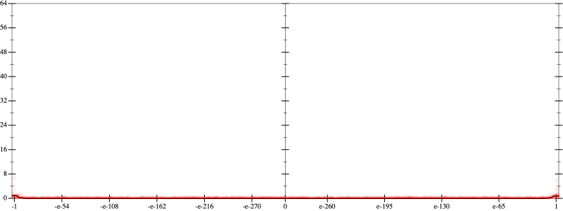
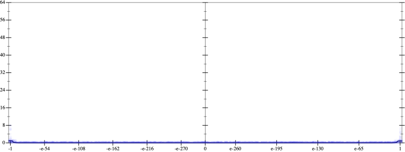
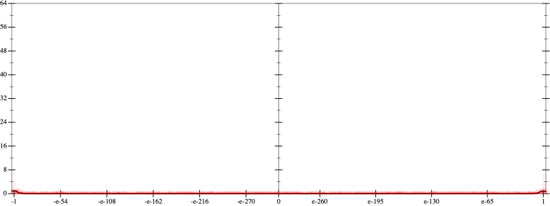
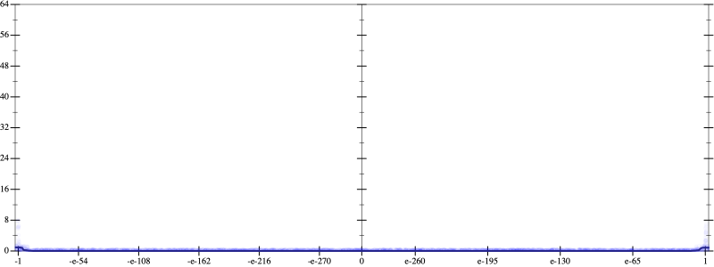

Initial program 0.0
\[\left(\left(\left(\left(-665280.0 \cdot x + 2217600.0 \cdot \left(\left(x \cdot x\right) \cdot x\right)\right) + -1774080.0 \cdot \left(\left(\left(\left(x \cdot x\right) \cdot x\right) \cdot x\right) \cdot x\right)\right) + 506880.0 \cdot \left(\left(\left(\left(\left(\left(x \cdot x\right) \cdot x\right) \cdot x\right) \cdot x\right) \cdot x\right) \cdot x\right)\right) + -56320.0 \cdot \left(\left(\left(\left(\left(\left(\left(\left(x \cdot x\right) \cdot x\right) \cdot x\right) \cdot x\right) \cdot x\right) \cdot x\right) \cdot x\right) \cdot x\right)\right) + 2048.0 \cdot \left(\left(\left(\left(\left(\left(\left(\left(\left(\left(x \cdot x\right) \cdot x\right) \cdot x\right) \cdot x\right) \cdot x\right) \cdot x\right) \cdot x\right) \cdot x\right) \cdot x\right) \cdot x\right)\]
Applied simplify0.0
\[\leadsto \color{blue}{\left(\left({x}^{3} \cdot \left({x}^{3} \cdot {x}^{3}\right)\right) \cdot \left(x \cdot \left(x \cdot 2048.0\right) + -56320.0\right) + \left(\left(\left(506880.0 \cdot x\right) \cdot \left(x \cdot x\right)\right) \cdot \left(\left(x \cdot x\right) \cdot \left(x \cdot x\right)\right) + -665280.0 \cdot x\right)\right) + \left(x \cdot x\right) \cdot \left(2217600.0 \cdot x + \left(x \cdot -1774080.0\right) \cdot \left(x \cdot x\right)\right)}\]
Taylor expanded around 0 0.0
\[\leadsto \left(\left({x}^{3} \cdot \left({x}^{3} \cdot {x}^{3}\right)\right) \cdot \left(x \cdot \left(x \cdot 2048.0\right) + -56320.0\right) + \left(\left(\left(506880.0 \cdot x\right) \cdot \left(x \cdot x\right)\right) \cdot \left(\left(x \cdot x\right) \cdot \left(x \cdot x\right)\right) + -665280.0 \cdot x\right)\right) + \color{blue}{\left(2217600.0 \cdot {x}^{3} - 1774080.0 \cdot {x}^{5}\right)}\]
 
